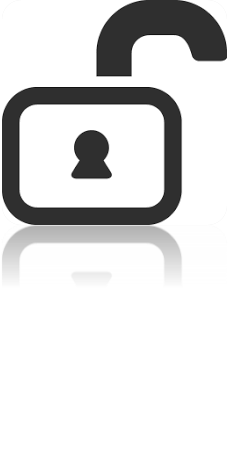
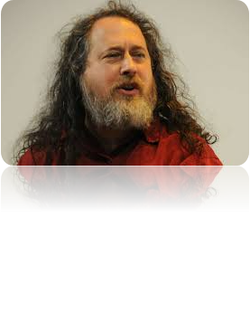

El software libre es un tipo de programas de ordenador que una vez obtenidos pueden ser usados, copiados, estudiados, modificados y redistribuidos libremente. Estos permisos son otorgados por sus autores, o quién sea que ostente los derechos de propiedad intelectual sobre el producto, a través de un acuerdo de licencia una forma de contrato que acompaña a cualquier programa.

1) La libertad de usar el programa, con cualquier propósito.
2) La libertad de estudiar cómo funciona el programa, y adaptarlo a tus necesidades.
3) La libertad de distribuir copias, con lo que puedes ayudar a tu vecino.
4) La libertad de mejorar el programa y hacer públicas las mejoras a los demás, de modo que toda la comunidad se beneficie.

El fundador del concepto del software libre fue Richard Stallman. En 1984 nació el proyecto GNU, cuyo objetivo era crear un sistema operativo Unix libre y que originó la creación de LiNUX, cuyo nombre es realmente GNU/LiNUX. Más tarde, en 1985, fundó la Free Software Foundation, una organización sin ánimo de lucro para promover el uso del software libre en el mundo.